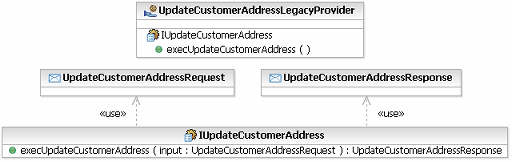

One must not forget that very few solutions are built without consideration to existing applications that either will
provide functionality to support the solution or with which the solution must interact. As such it is vital that
existing legacy applications that will be reused as part of any solution be catalogued and their functionality
identified. With a service-oriented solution, we are able to take a number of routes to integrate new services with
existing functionality. These are demonstrated in the figure below:
-
Wrap existing function as a service. In this case, we are looking to leave the function as-is, but use tools
or middleware to expose the existing function as a service. For example, IBM provides the capability to expose
legacy CICS transactions as SOAP Web services.
-
Wrap and replace existing function with a service. In this case, we wrap a function as above, but we use the
resulting service specification to redevelop the service at a later date, replacing the original service and having
clients redirected to the new implementation.
-
Use an adapter more amenable to service invocation. In some cases, it is not possible to wrap a function and
expose it as a service, but may be possible to wrap the function in something more able to integrate, such as a
message queuing interface or the Java Connector Architecture (JCA). This allows new services to access the function
in-place.
-
Integrate the function into the service. Obviously in some cases, it is possible for the new service to
access the legacy function in-place, simply using the function as a logical component within the implementation of
the service.

It should be considered that the third and fourth options provide the most flexibility because they use the existing
function but do not continue to expose the function as-is to clients. On the other hand, the first and second options
may introduce issues with the wrapping of existing functions as services because the performance of Web-service
protocols and mismatches between native data formats and XML may introduce performance concerns.
Existing software assets and their dependencies and interfaces will have to be analyzed to determine if changes are
required to support the business functionality. For example, in order to
create a web services interface for a legacy implementation of a business function, analysis may involve the
examination of the composition and flow of online transactions or batch jobs, or persistent data stores that help
perform that function. The current design of these existing applications
may have to change to support the functionality. There is also a need to
identify any potential barriers to creating a web services interface with the desired quality of service. For example, a monolithic batch implementation of a business function may
require sub second response time when invoked as a service.
Wrapping Existing Assets as a Services Pattern
In some cases, however, it is expedient to develop a legacy service partition where a set of low-level legacy functions
are exposed individually as services. This partition is only accessible to higher level services that utilize them in
presenting a more granular business-aligned specification to consumers. This encapsulation of the legacy functions
should be seen as a temporary solution and should only be undertaken if the performance characteristics of the wrapping
technology is well understood. For more information see the concept Solution Partitioning.
One way to look at the wrapping of a legacy function is a very simplified form of the Service Provider model element, with a single service realizing a
single specification with only a single operation. The following diagram demonstrates this pattern for the legacy
function "UpdateCustomerAddress".

In tailoring this pattern, you may wish to do the following:
-
It is likely that a set of existing functions will be provided by the same component so the same service provider
should be used.
-
The pattern above was generated automatically; it might be preferable to rename the default operation name from
"exec${service}".
-
Similarly, it would be valuable to rename the default generated messages; also at this point, the message
structures should be modeled.
-
The default pattern assumes the operation takes a message input and return a message; it may be that the legacy
function returns no message or is a notification only and the signature of the operation generated should be
amended.
-
The architect/designer should ensure that the correct values are specified for the "allowedBindings" property on
the service provider.
|